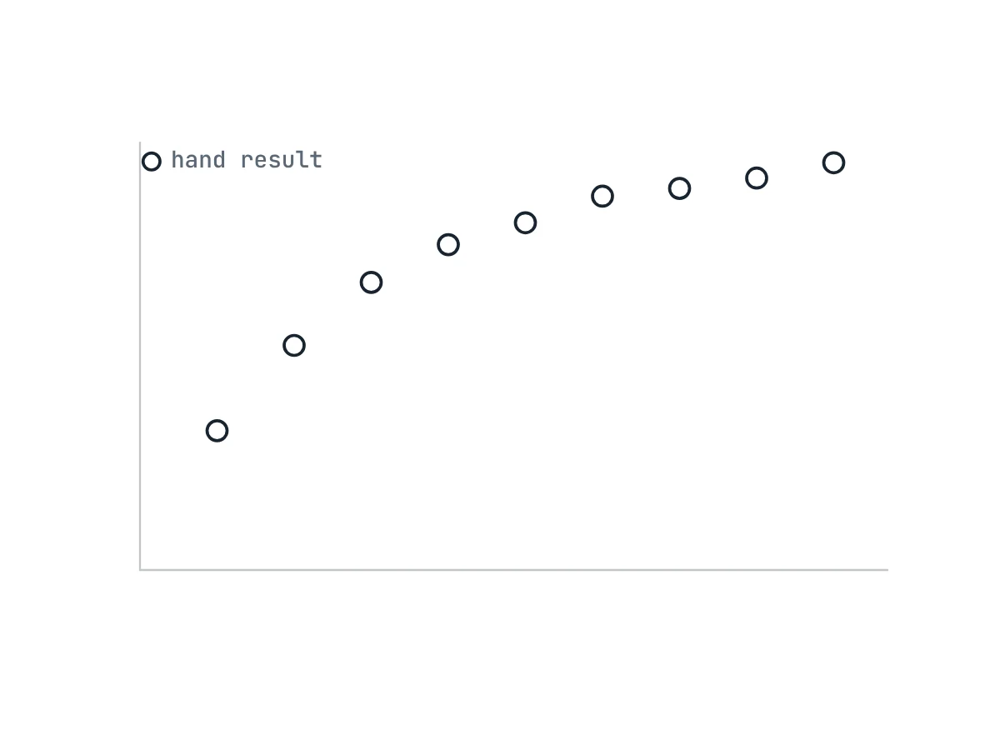
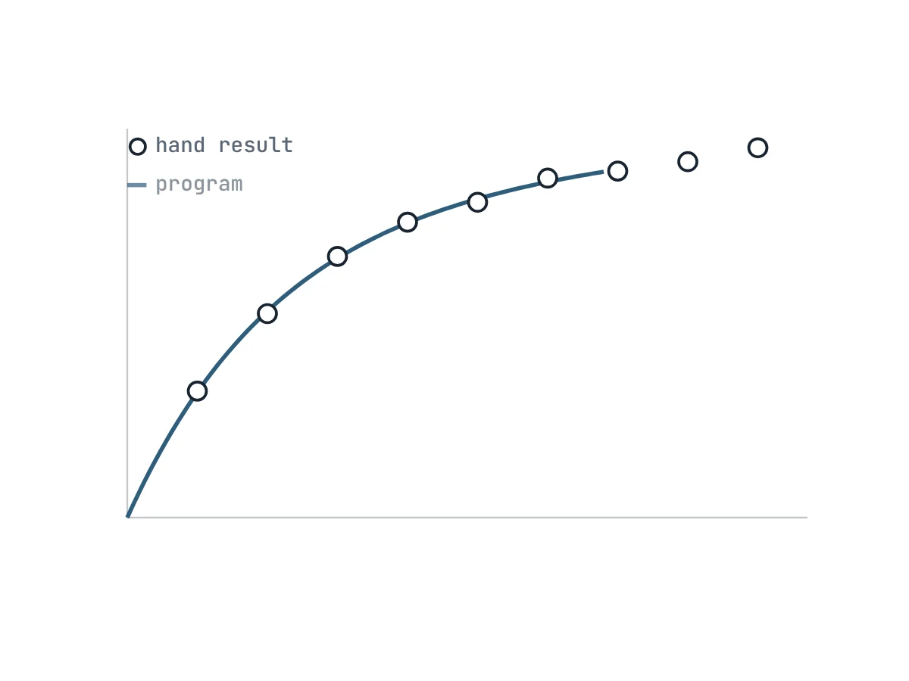
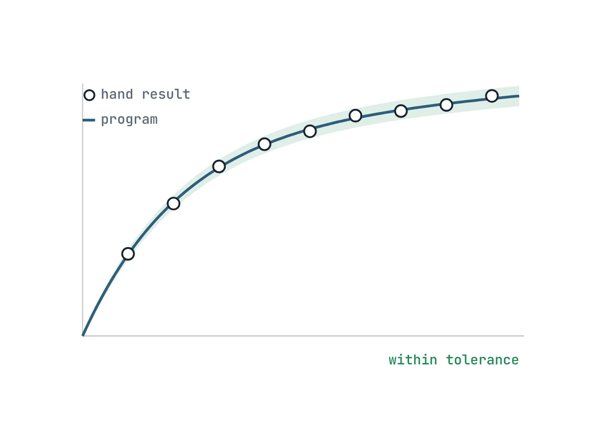

First, the reference
The result is worked out independently: from structural theory, or from a reference model.
Engineering software earns trust the way engineers do: by showing where every number comes from, and by checking it against something independent.
A design rule enters Binacore in three steps.
The rule is read in the design code itself, at its clause.
The clause is recorded in the software, beside the rule it governs.
The check on your screen and in your report names that clause.
An answer counts when a second, independent answer agrees with it.

The result is worked out independently: from structural theory, or from a reference model.

The same problem is run in Binacore.

The two must agree within a stated tolerance. The comparison stays in the test suite and runs again with every change.
No text, table or figure of any design code is reproduced in the app or on this site. You work with your own copy; we tell you which clause to open.
Binacore does the arithmetic and shows its work. The judgement, and the responsibility, remain with a qualified engineer.
Every analysis in Binacore Desktop is run by OpenSees, the Open System for Earthquake Engineering Simulation, developed at the University of California, Berkeley.
OpenSees © The Regents of the University of California. OpenSeesPy © Minjie Zhu.